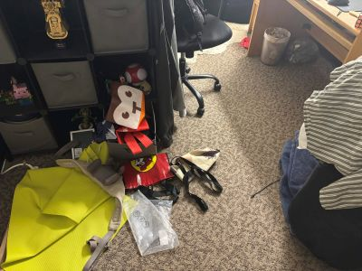
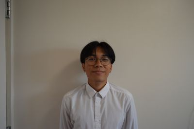

Here's a quick look into my dorm room floor before TWP!
Choosing to document my trash began as a simple and practical decision. Like most college students living in a dorm, I had accumulated a surprising amount of clutter in my already small space. My original goal was pretty straightforward: clean my room and keep track of what I was throwing away. At first, the process felt obvious. I rid my room of empty water bottles, crumpled chip backs, and whatever other food wrappers I had lying around. I rummaged through what was broken, used up, and things that I no longer had any use for. Recording that stuff was easy, and a good way to tidy up!
However, as the project continued, the idea of what counted as “trash”, moreso “waste”, began to feel less clear. Some objects were easy to discard, but others took long, hard conversations to have with myself. By around the third week, I noticed that the process had changed the way I thought about the objects around me. I became more aware of the things I owned, how long they sat around, and most importantly, why I was keeping them. Items sitting on my desk that I paid no attention to were having internal debates in my mind. What value did these seemingly useless items bring to me? Were these things losing value, or had I simply just stopped paying mind to them?
The goal of this project is not for me to present my life as perfectly sustainable because it’s not. I have a lot of actual trash, and that won’t be changing any time soon. Rather, it is meant for me to slow down and be thoughtful about what I am throwing away. By documenting my waste, the act becomes deliberate, and we can then reconsider what waste represents. Trash is often seen as the end, but it can also be understood as a reflection of habits, environments, and even people! What we discard can reveal just as much about our lives as the things we choose to keep.
What began as an attempt to clean my messy dorm room (which supposedly means I'm more intelligent) ultimately became a project about awareness. This project encouraged me to not only think about what I throw away, but why I was throwing it away, and how often I choose to discard things. In doing so, I became more aware of the ways that everyday objects shape my routine and habits, and I gained a better understanding of how I live and consume, as well as how easily objects shift from being meaningful to disposable.

Hi there! My name is Vincent Espana, and I am a senior Computer Science major at Rutgers University. Throughout my time studying computer science, I’ve developed a strong interest in how technology works behind the scenes, but more recently I’ve become curious about how people interact with the things we build. That curiosity is what led me to explore UI/UX design and start learning how to create more thoughtful and user-friendly digital experiences.
Outside of school, I enjoy dancing, cooking, and indoor rock climbing! I like activities that keep me moving and active, and I am always ready to satiate my cravings for foods I’ve never tried before. Most of all, I appreciate experiences that let me challenge myself and learn something new, whether that’s figuring out a tricky climbing route, experimenting with a new recipe, or exploring a new hobby.
This website is part of my journey into design and web development. I’m still learning, experimenting, and figuring things out along the way, but I’m excited to keep improving and building projects that combine creativity with technology.
YouTube: Vincent Espana's Channel
Instagram: Vincent's Profile